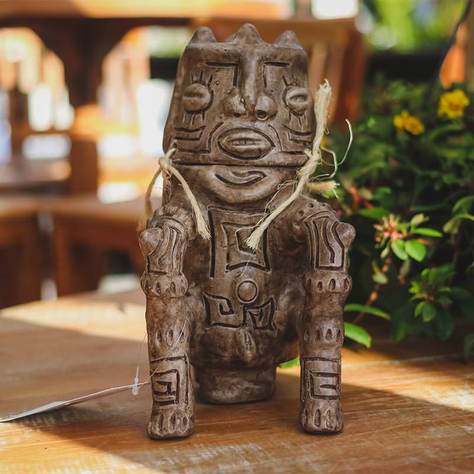

A escultura indígena brasileira é uma manifestação artística ancestral, rica em significados e técnicas transmitidas de geração em geração. Utilizando materiais naturais como madeira, pedra, argila e ossos, os povos indígenas criam esculturas que representam seu universo simbólico, mitológico e cotidiano.
Madeira: troncos e galhos são esculpidos para criar máscaras, bancos cerimoniais e estátuas. Povos como os Karajá e os Ticuna são conhecidos por suas esculturas detalhadas.
Argila: modelada e queimada para fazer bonecas, urnas funerárias e objetos rituais, como as cerâmicas marajoaras.
Pedra e ossos: usados para criar utensílios, amuletos e esculturas com valor simbólico e espiritual.
Função e Significado As esculturas indígenas não são apenas decorativas; elas possuem funções culturais, espirituais e sociais.
Máscaras e Totens: usadas em rituais e cerimônias, como as máscaras Tikuna, que representam espíritos da floresta. Bonecas Karajá (Ritxòkò): representam figuras femininas e são símbolos de identidade cultural, passando de mães para filhas.
Urnas Funerárias: como as encontradas na cultura Marajoara, são elaboradas para guardar os restos mortais dos ancestrais.
Objetos Totêmicos: como os bancos esculpidos dos povos Mehinaku e Waujá, que possuem formas de animais e são usados por líderes em rituais.
Importância Atual A escultura indígena continua sendo uma importante forma de expressão e resistência cultural. Muitas comunidades produzem suas peças tanto para uso interno quanto para venda, promovendo sua arte no Brasil e no exterior. O reconhecimento dessas esculturas fortalece a identidade dos povos indígenas e valoriza seu conhecimento ancestral.
A escultura decorativa inspirada nas cerâmicas dos índios Tapajós impressionam pela singularidade estilística e levam o conceito de beleza a outro patamar. São verdadeiras expressões artísticas que valorizam os ambientes, causam impacto na decoração e incentivam a preservação das nossas raízes indígenas pelas mãos dos artesãos santarenos.
Como grande parte dos artesanatos brasileiros dessa origem, as esculturas de barro tapajônicas são comercializadas em Manaus e distribuídas para todo o Brasil por lojas especializadas em artes decorativas como a Arte & Sintonia. Cada artesanato de barro - fiel reprodução da antiga cerâmica decorada dos Tapajós - torna evidente o estilo exclusivo do patrimônio artístico deixado pelos índios brasileiros.
A escultura decorativa inspirada nas cerâmicas dos índios Tapajós impressionam pela singularidade estilística e levam o conceito de beleza a outro patamar. São verdadeiras expressões artísticas que valorizam os ambientes, causam impacto na decoração e incentivam a preservação das nossas raízes indígenas pelas mãos dos artesãos santarenos.
